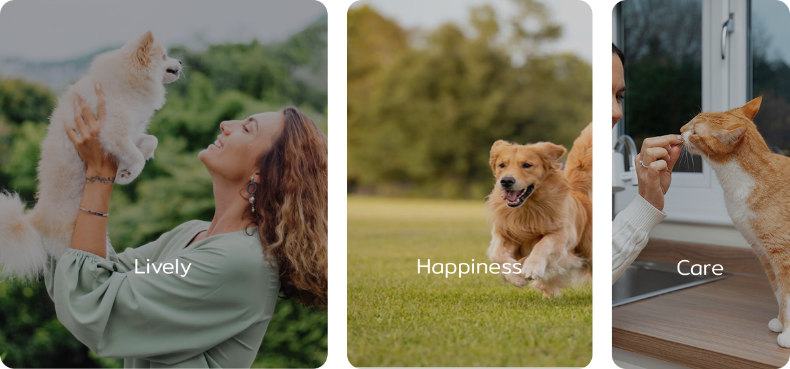
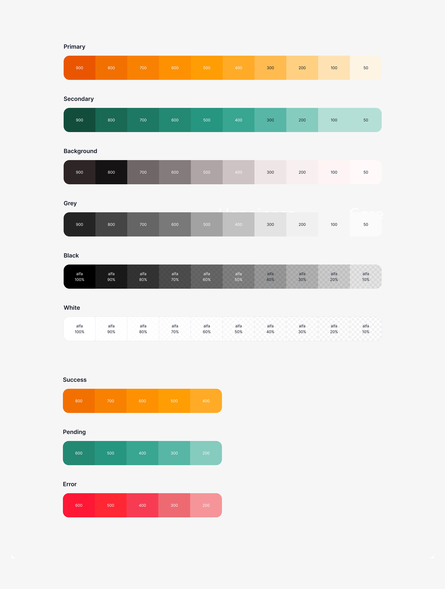
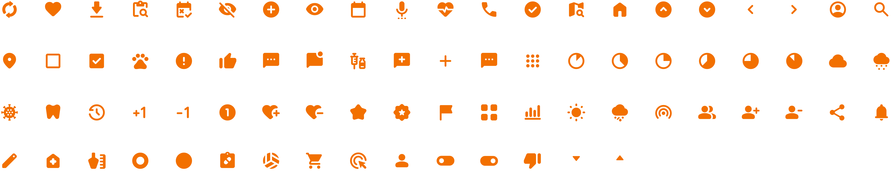
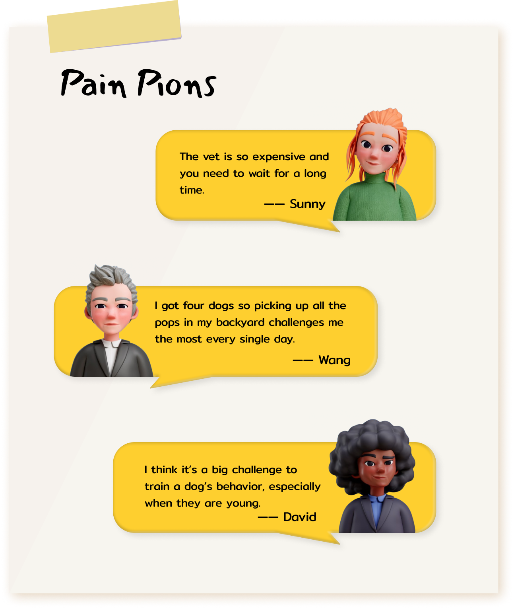
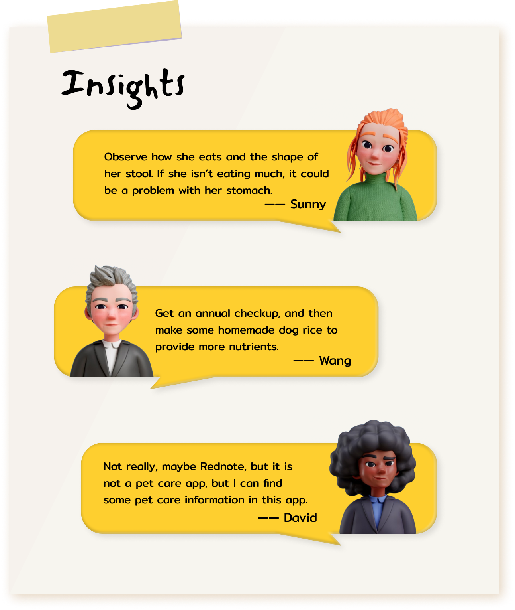
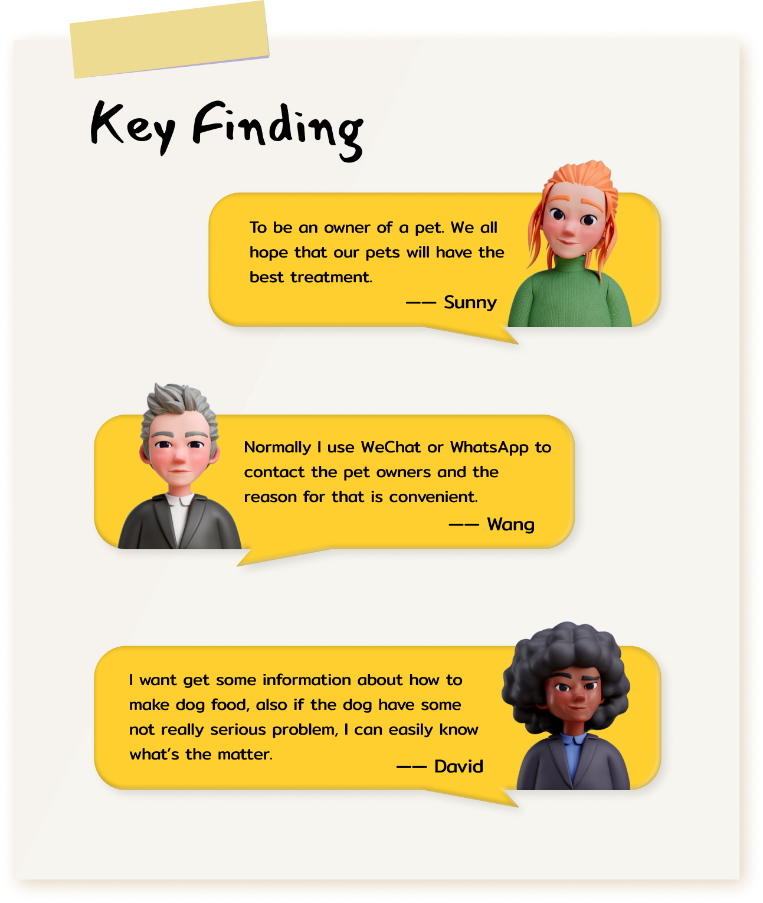
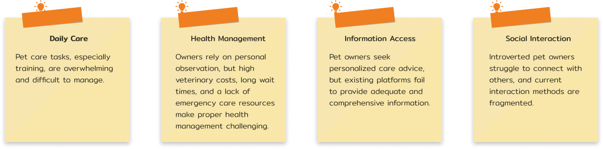
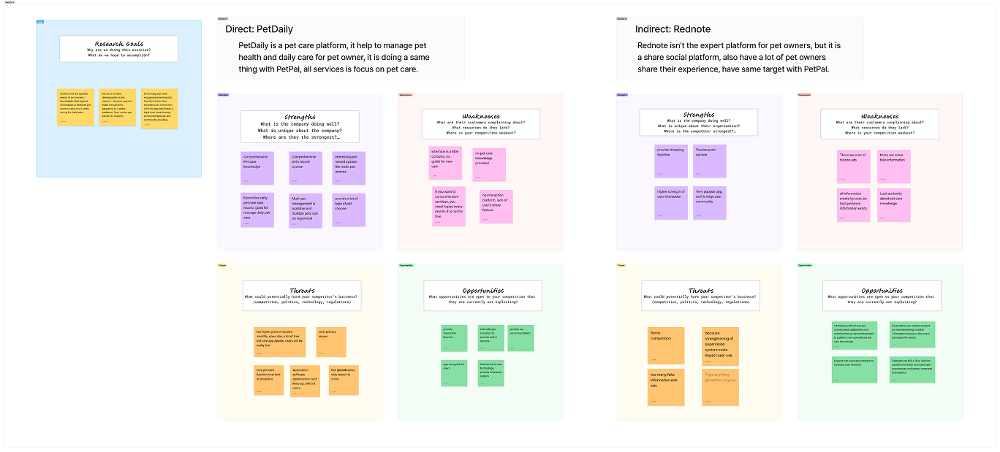
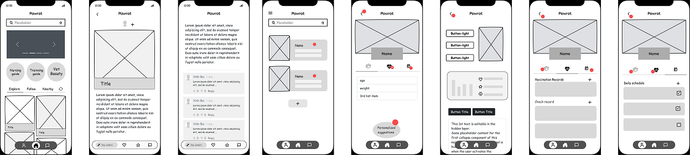
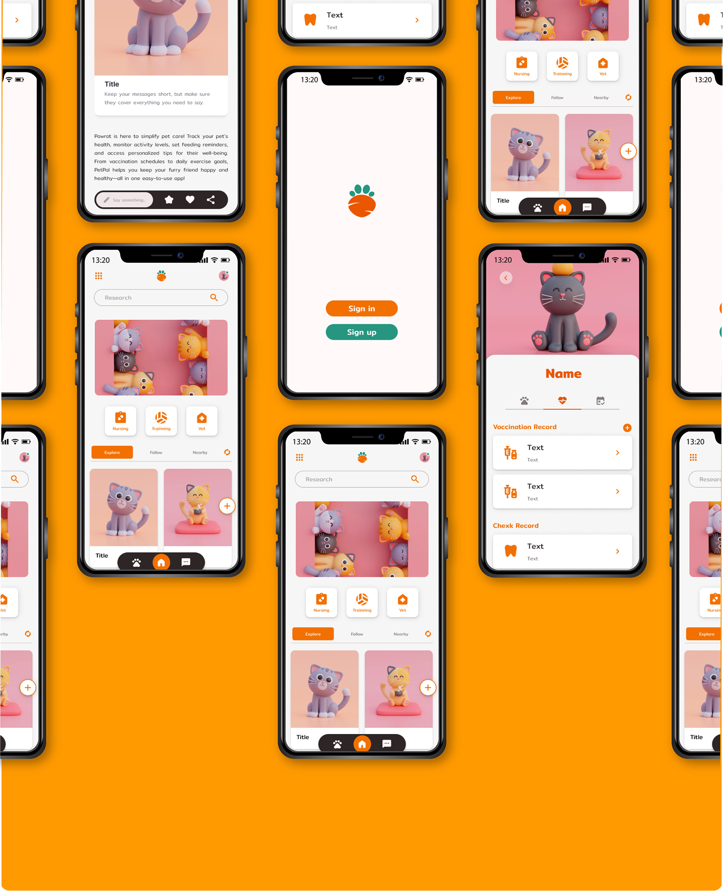

04 / Design Guide
Brand value

Typography

Color

Icon

PetPal is a mobile and desktop application designed to provide a one-stop solution for pet owners to access reliable pet care knowledge, track pet health, and engage with a supportive community. By combining expert pet care advice, social interaction features, and personalized recommendations, PetPal aims to improve the quality of life for pets and their owners.
To create an intuitive and engaging platform that helps pet owners access vital pet care knowledge, track pet health, and connect with a like-minded community in a meaningful way.
To better understand pet owners’ needs, the following research methods were conducted:
After identifying the target population, the research methodology of the survey was chosen, the One-on-One Interview is good for the research and understanding the main pains users face.



Based on the interview, I was use it to do a Affinity Map research, we identified key challenges pet owners face in four main areas.

Through Competition Analysis, we discovered that users desire a platform where they can share pet care experiences while accessing professional and authoritative pet care knowledge. However, existing platforms lack expert guidance, and excessive advertisements negatively impact user experience. Users prefer personalized recommendations tailored to their pets and a more interactive, community-driven platform.
Our insights highlight the need for a platform that balances professional knowledge with social engagement, combining pet care expertise, social sharing, and personalized recommendations. A comprehensive pet service platform with these features would fill a market gap, offering both credibility and a strong sense of community.






Understanding real pet owner needs helped shape meaningful features.
User testing led to multiple refinements, making the app more intuitive.
Balancing health tracking with social interaction improved user experience.
Pawrot PetPal successfully integrates AI-driven pet care, health tracking, and social engagement into a seamless platform. The app provides pet owners with reliable pet care information, emergency resources, and an interactive community, enhancing both pet well-being and user experience.